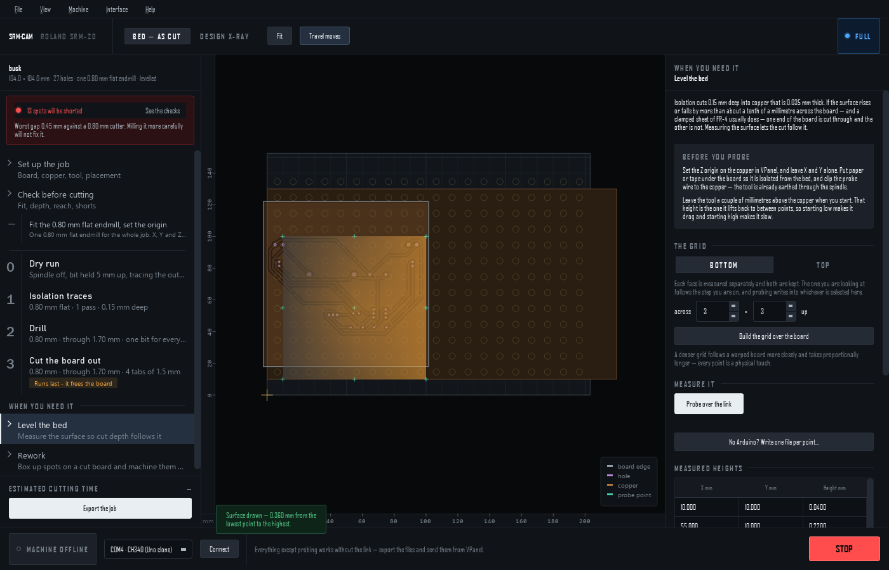

Bed levelling & probing
Isolation cuts 0.15 mm into copper that is 0.035 mm thick; FR-4 bows more than that. Measure the surface, and every cut follows it.

Set the Z origin on the copper in VPanel and leave X and Y alone. Paper or tape under the board so it is isolated from the bed; the red clip on the copper; spindle off. Leave the tool a couple of millimetres above the copper — that is the height it lifts back to between points.
Measure
- Build the grid Set across × up (3×3 to start, denser for a warped board) and Build the grid over the board. It is laid over the part of the job the machine can reach and that is on the copper; if part of the job is past either, it says so — and so do the checks.
- Probe over the link Start from wherever the tool is: the grid is in machine coordinates and the run is measured from the live position. Each point is a two-stage verified touch; the table fills as it goes. STOP stops it at the next point.
- No Arduino? Write one file per point… gives you a program per grid point for VPanel. Run each, read Z at contact, type it into the table.
A finished probe switches Warp the exported cut to this surface on by itself. The advice underneath says the shallowest depth this map supports.
| In the table | Meaning |
|---|---|
| no touch | The bit reached the floor without contact: no copper there, clip off, or started too high. |
| unstable | The two touches disagreed — a dirty contact. Clean the copper, reseat the clip, probe again. |
| failed | The firmware refused the point. A point outside the travel used to end up here; the grid no longer goes there. |
Use it
- Warp the exported cut to this surface — every cutting Z in the files follows the map. The dry run is left alone; it is in the air.
- Draw the measured surface on the board and See the surface in 3D… show what was measured. A real board is smooth; a lone spike is a flaky touch.
- Save… / Load… keep the map as a CSV that carries which face it was probed on. Clear discards this face's heights only.
- A board held at points gets a little extra depth worked out from the map — see Holding the copper.
Two faces
On a double-sided job the page has a Bottom / Top switch, and each face keeps its own measurement. Selecting a step that cuts a face shows that face's map; after the flip, switch to the top, build and probe again — the board sits on new terrain — and the top files use the top's map, never the bottom's.
The maps of both faces are saved in the setup file. Save it right after probing.